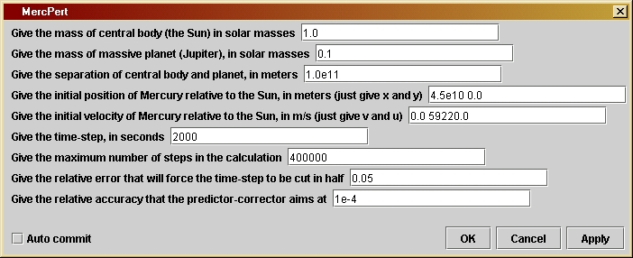
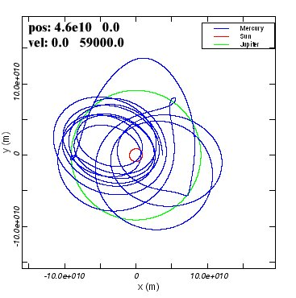
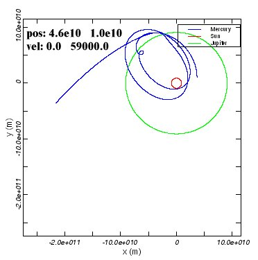
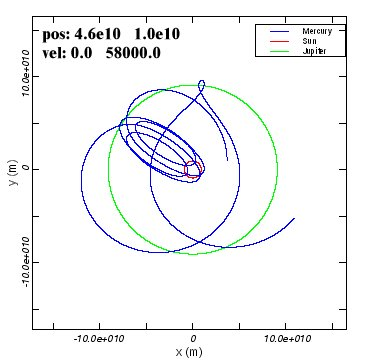
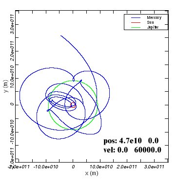
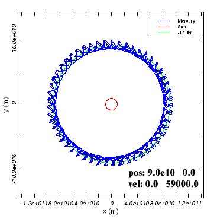
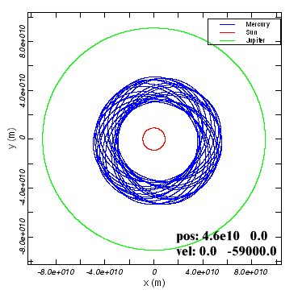

MercPertversion 1.0
© 2003 Bernard Schutz
|
The user can choose the masses and separation of the binary bodies, the initial condition and location of the smaller planet, and the same parameters that govern the program as in previous orbit programs like Orbit and Binary: time-step length, number of time-steps, and the accuracy parameters for time-step halving and for the predictor-corrector method.
MercPert is our first look at the complex world of systems containing more than two bodies. We are starting gently here, by studying a special case. As explained in Chapter 13, only the gravity produced by the binary system is taken into account: the small "Mercury" is assumed to have negligible effect on the other two bodies. (Physicists call this the "restricted three-body problem", restricted because the mass of the third body is negligible.) The binary system, moreover, has a circular orbit, and "Mercury" will move only in the plane of this orbit. This special case is nevertheless very interesting, not only for the amaxing complexity of the effects on "Mercury" but also because this situation is duplicated in many young solar systems, where massive planets like this super-Jupiter clear out a region of the proto-planetary disk and prevent other planets from forming nearby.
You can change the parameters by opening up the parameter window: double-click on the unit's icon when it is in the working area to get a window like the one shown to the left. The default parameters represent a situation that will evolve roughly like Figure 13.4 of the book, where "Mercury" is attracted by "Jupiter" and loops once around it backwards, winding up on a tighter and more eccentric orbit around the Sun. The first parameter allows the user to choose the mass of one of the binary bodies (conventionally, the "Sun", but it need not even be the more massive of the two), and the second parameter is for the mass of the second binary body ("Jupiter"). Both masses are given in solar masses, not in kg. The third parameter is the separation of the binary bodies, in meters. Since the program assumes they are in a circular binary orbit, giving their separation and their masses fixes the binary system completely. The program assumes that at the initial moment, the binary bodies lie on the x-axis, with the first body at negative-x and the second at positive-x. Their orbits follow circles in the counter-clockwise direction, and the centers of both circles remain at the origin of the coordinates. This information is important for deciding where to place the third body ("Mercury"). Its initial position is given in the fourth line: the user should type both coordinates (in meters), separated by one or more spaces, but without additional punctuation. Similarly, the user should type into the fifth line the initial velocity of "Mercury", again giving both components separated by spaces (in meters per second). This fully determines the orbit of the third body. The remaining parameters are similar to those in Orbit and Binary that control the running of the program: time-step length, number of time-steps, and two accuracy parameters.
One difference with previous programs is that this one does not stop once "Mercury" has made a complete orbit. The trajectory of Mercury can be so irregular that this criterion would be meaningless; moreover, it is very interesting to watch the system evolve over many orbits. So the only thing that stops the program is reaching the total number of time-steps given in the seventh parameter. Notice that the total elapsed time along the orbit is not predictable, since the time-step can be reduced by the program. Just experiment with the program and if it does not go as far as you want, reset the number of time-steps to a larger number and run it again. Notice also that there is no choice-box offering you different output options. For this program only the orbits are output.

There are a few things that you should notice in these examples.
This program can simulate a much larger variety of systems than just Sun+Jupiter. Because you can choose the initial masses and separations of the binary bodies freely, you can explore many other kinds of systems. Try the following:
In the program, variables relating to the "Sun" have names ending in Sun, those relating to "Jupiter" have names ending in Planet, and those relating to "Mercury" have names including the word Merc.
The positions of the binary bodies do not need to be calculated from
their accelerations.We already know how a circular binary moves, so we
can just write down their positions at any time. We know from the
discussion
in Invesigation 13.1 that they have orbital radii in inverse proportion
to their masses, so that we can calculate at the beginning of the
program
the orbital radius of the "Sun", rSun,
from
the two binary masses mSun and mPlanet
and their separation binarySeparation,
all
three of which are given by the user in the parameter window:
double
rSun = mPlanet/(mSun + mPlanet)*binarySeparation;
Then the radius of "Juptier's" orbit must make up the remainder of
the separation of the two bodies:
double
rPlanet = binarySeparation - rSun;
The bodies orbit each other with the angular velocity omega that one
can deduce from Equation 13.4 by solving for 2p/P,
where P is the orbital period:
double
omega = Math.sqrt(kGravity*(mSun +
mPlanet)/Math.pow(binarySeparation,3));
Recall that, as in the program Binary,
kGravity
is the product of Newton's gravitational constant G and the
mass
of the Sun. This allows us to use the variables
mSun
and mPlanet for the masses of these
bodies
in units of solar masses.
Given these variables, then at any time t
the coordinate positions of the binary bodies are
xSun =
-rSun*Math.cos(omega*t);
ySun =
-rSun*Math.sin(omega*t);
xPlanet
= rPlanet*Math.cos(omega*t);
yPlanet
= rPlanet*Math.sin(omega*t);
The minus signs in the first two expressions reflect the fact that
the "Sun's" initial position is on the negative-x-axis. In fact, you
will
not see lines like these explicitly in the code below. Instead, it is
more
efficient to compute the sine and cosine just once, assigning their
values
to variables s1 and c1,
respectively. Moreover, there are no variables xSun,
ySun,
..., in the program because the only thing that is important is the
distance
of "Mercury" from the binary bodies. Therefore what one finds in the
code
instead of the above are lines like
c1 =
Math.cos(t1*omega);
s1 =
Math.sin(t1*omega);
xMercSun1
= xMerc1 + rSun * c1;
yMercSun1
= yMerc1 + rSun * s1;
xMercPlanet1
= xMerc1 - rPlanet * c1;
yMercPlanet1
= yMerc1 - rPlanet * s1;
which compute the components of the displacement vectors from the
binary
bodies to "Mercury".
As in previous programs, once this displacement is known the
acceleration
of "Mercury" can be computed, as the sum of the accelerations produced
by the two binary bodies. This is done in program lines like
rMercSun
= Math.sqrt( xMercSun1*xMercSun1 + yMercSun1*yMercSun1 );
rMercSun3
= Math.pow(rMercSun,3);
rMercPlanet
= Math.sqrt( xMercPlanet1*xMercPlanet1 + yMercPlanet1*yMercPlanet1 );
rMercPlanet3
= Math.pow(rMercPlanet,3);
axMerc1
= -kGravity * ( mSun*xMercSun1/rMercSun3 +
mPlanet*xMercPlanet1/rMercPlanet3
);
ayMerc1
= -kGravity * ( mSun*yMercSun1/rMercSun3 +
mPlanet*yMercPlanet1/rMercPlanet3
);
These should be self-explanatory, if you have followed the development
of Binary.
From these acceleration components the program computes the orbit of
"Mercury"
in the usual way.
The remaining parts of the program are the same as before, with
time-step
halving and the predictor-corrector. The loop that moves forward in
time
is even simpler, since there is no test for the completion of one
orbit:
it just runs until it reaches the maximum number of steps set by the
user.
If you want to change the program you will have to re-compile it, as
explained by the help file Using Triana for
Gravity
from the ground up.
/*
binarySeparation is the distance
between the central body and the
planet, both of which are taken
to follow circular orbits. They
begin at t=0 with a separation just
along the x-direction. The
separation is in meters and is set
by the user in the parameter
window.
*/
private double binarySeparation;
/*
initPosMerc is the String used by
the program to allow users
to input the initial position of
"Mercury" in the parameter
window. The String is processed
to obtain the initial x-
and y-positions, which are stored
in xInitMerc and yInitMerc.
All positions are given in meters.
*/
private String initPosMerc;
private double xInitMerc;
private double yInitMerc;
/*
initVelMerc is the String used by the program
to allow users
to input the initial velocity of "Mercury" in
the parameter
window. The String is processed to obtain the
initial x-
and y-velocity components, which are stored
in vInitMerc
and uInitMerc. All velocities are given in m/s.
*/
private String initVelMerc;
private double vInitMerc;
private double uInitMerc;
/*
dt is the time-step in seconds.
It is set by the user in the
parameter window.
*/
private double dt;
/*
maxSteps is the maximum number of
steps in the calculation.
This is used to ensure that the
calculation will stop even
if initial values are chosen so
that "Mercury" is expelled
from the Solar System. It is set
by the user in the parameter
window.
*/
private int maxSteps;
/*
eps1 sets the accuracy of the
time-step.
If computed quantities
change by a larger fraction than
this in a time-step, the time-step
will be cut in half, repeatedly
if necessary. It is set by the user
in the parameter window.
*/
private double eps1;
/*
eps2 sets the accuracy of the
predictor-corrector
step. Averaging
over the most recent time-step is
iterated until it changes by
less than this relative amount.
It is set by the user in the
parameter window.
*/
private double eps2;
/*
kGravity is Newton's gravitational
constant times the mass of the Sun.
It is used internally and not set
by the user.
*/
private double kGravity = 1.327e20;
/*
Now define
other variables that will be needed, but without giving
initial
values. They will be assigned values during the calculation.
- t1 is
a temporary value of the time, used to compute postions of the
binary bodies when needed.
- xMerc1
and yMerc1 are temporary values of x and y for Mercury that are
needed during the calculation.
- axMerc1
and ayMerc1 are likewise temporary values of the acceleration.
- dxMerc
and dyMerc are variables that hold part of the changes in
x and y for Mercury that occur during a time-step.
- ddxMerc0,
ddxMerc1, ddyMerc0 and ddyMerc1 are variables that hold other parts of
the changes in x and y of Mercury during a time-step. The reason for
having
both dxMerc and ddxMerc will be explained in comments on the
calculation
below.
- dvMerc
and duMerc are the changes in velocity components of Mercury that occur
during a time-step.
- xMercSun1,
yMercSun1, xMercPlanet1, and yMercPlanet1 are temporary values that
hold the separations of Mercury from the Sun and the massive planet,
respectively.
-
testPrediction
will hold a value that is used by the predictor-corrector
steps to assess how accurately the calculation is proceeding.
- c1 and
s1 are temporary variables used to make the computation of the positions
of the Sun and the massive planet more efficient.
- j and
k are integers that will be used as loop counters.
*/
double t1, xMerc1,
yMerc1,
axMerc1, ayMerc1, dvMerc, duMerc;
double dxMerc, dyMerc,
ddxMerc0, ddyMerc0, ddxMerc1, ddyMerc1;
double xMercSun1,
yMercSun1,
xMercPlanet1, yMercPlanet1;
double testPrediction;
double c1, s1;
int j, k;
/*
Now start
the loop that computes the two orbits. The loop counter
is j, which
(as in Orbit) starts at 1 and increases by 1 each
step. The
test for exiting from the loop will be that the number
of steps
exceeds the maximum set by the user.
*/
for ( j = 1; j <
maxSteps ; j++ ) {
/*
- Set dvMerc and duMerc to the changes in x- and y-speeds that would
occur
during time dt1 if the acceleration were constant at (axMerc0, ayMerc0).
- Similarly set dxMerc and dyMerc to the changes in position that would
occur if the velocity components vMerc and uMerc were constant during
the
time dt1.
- Set ddxMerc0 and ddyMerc0 to the extra changes in x and y that occur
because
Mercury's velocity changes during the time dt1. The velocity change that
is used is only dvMerc/2 (or duMerc/2, respectively) because the most
accurate change in position comes from computing the average
velocity during dt1. We separate the two position changes, dxMerc and
ddxMerc0, because dxMerc will be unchanged when we do the
predictor-corrector
below (the change in position due to the original speed is always
there), while ddxMerc0 will be modified when axMerc0 and hence dvMerc
is
modified
by the predictor-corrector.
- Finally, set ddxMerc1 and ddyMerc1 to ddxMerc0 and ddyMerc0
initially.
They will
change when we enter the predictor-corrector code.
*/
t1 = t + dt1;
dvMerc = axMerc0*dt1;
duMerc = ayMerc0*dt1;
dxMerc = vMerc*dt1;
dyMerc = uMerc*dt1;
ddxMerc0 = dvMerc/2*dt1;
ddyMerc0 = duMerc/2*dt1;
ddxMerc1 = ddxMerc0;
ddyMerc1 = ddyMerc0;
/*
Now advance the position of Mercury by our initial estimates of the
position changes, dxMerc + ddxMerc0 and dyMerc + ddyMerc0. Then
compute the new distances of Mercury from the binary bodies and the
resulting acceleration at this position. Use the positions of the
binary bodies at the time t1.
*/
xMerc1 = xMerc0 + dxMerc + ddxMerc0;
yMerc1 = yMerc0 + dyMerc + ddyMerc0;
c1 = Math.cos(t1*omega);
s1 = Math.sin(t1*omega);
xMercSun1 = xMerc1 + rSun * c1;
yMercSun1 = yMerc1 + rSun * s1;
rMercSun = Math.sqrt( xMercSun1*xMercSun1 + yMercSun1*yMercSun1 );
rMercSun3 = Math.pow(rMercSun,3);
xMercPlanet1 = xMerc1 - rPlanet * c1;
yMercPlanet1 = yMerc1 - rPlanet * s1;
rMercPlanet = Math.sqrt( xMercPlanet1*xMercPlanet1 +
yMercPlanet1*yMercPlanet1
);
rMercPlanet3 = Math.pow(rMercPlanet,3);
axMerc1 = -kGravity * ( mSun*xMercSun1/rMercSun3 +
mPlanet*xMercPlanet1/rMercPlanet3
);
ayMerc1 = -kGravity * ( mSun*yMercSun1/rMercSun3 +
mPlanet*yMercPlanet1/rMercPlanet3
);
/*
Time-step check.
This is the code to check whether the time-step is too large. The idea
is to compare the changes in acceleration of Mercury during the timestep
with the acceleration of Mercury itself. If the change is too
large a fraction of the original value, then the step is likely to be
too large, and the resulting position too inaccurate. The code below
cuts
the time-step dt1 in half and then goes back to the beginning of the
loop.
This is explained more fully in the program Orbit.
*/
if ( Math.abs(axMerc1-axMerc0) + Math.abs(ayMerc1-ayMerc0) >
eps1*(Math.abs(axMerc0)
+ Math.abs(ayMerc0)) ){
dt1 /= 2;
j--;
}
else {
/*
Predictor-corrector step. This is explained in program Orbit.
*/
testPrediction = Math.abs(ddxMerc0) + Math.abs(ddyMerc0);
for ( k = 0; k < 10; k++ ) {
/* compute dvMerc and duMerc by averaging the acceleration over dt1 */
dvMerc = (axMerc0 + axMerc1)/2*dt1;
duMerc = (ayMerc0 + ayMerc1)/2*dt1;
/* compute ddxMerc1 and ddyMerc1 by averaging the velocity change */
ddxMerc1 = dvMerc/2*dt1;
ddyMerc1 = duMerc/2*dt1;
/*
Test the change in ddx and ddy since the last iteration.
If it is more than a fraction eps2 of the original, then
ddx and ddy have to be re-computed by finding the acceleration
at the refined position.
If the change is small enough, then the "else:" clause is
executed, which exits from the for loop using the statement
"break". This finishes the iteration and goes on to wrap up
the calculation.
*/
if ( Math.abs(ddxMerc1-ddxMerc0) + Math.abs(ddyMerc1-ddyMerc0) >
eps2 *
testPrediction ) {
/*
Re-define ddxMerc0 and ddyMerc0 to hold the values
from the last iteration
*/
ddxMerc0 = ddxMerc1;
ddyMerc0 = ddyMerc1;
xMerc1 = xMerc0 + dxMerc + ddxMerc0;
yMerc1 = yMerc0 + dyMerc + ddyMerc0;
c1 = Math.cos(t1*omega);
s1 = Math.sin(t1*omega);
xMercSun1 = xMerc1 + rSun * c1;
yMercSun1 = yMerc1 + rSun * s1;
rMercSun = Math.sqrt( xMercSun1*xMercSun1 + yMercSun1*yMercSun1 );
rMercSun3 = Math.pow(rMercSun,3);
xMercPlanet1 = xMerc1 - rPlanet * c1;
yMercPlanet1 = yMerc1 - rPlanet * s1;
rMercPlanet = Math.sqrt( xMercPlanet1*xMercPlanet1 +
yMercPlanet1*yMercPlanet1
);
rMercPlanet3 = Math.pow(rMercPlanet,3);
axMerc1 = -kGravity * ( mSun*xMercSun1/rMercSun3 +
mPlanet*xMercPlanet1/rMercPlanet3
);
ayMerc1 = -kGravity * ( mSun*yMercSun1/rMercSun3 +
mPlanet*yMercPlanet1/rMercPlanet3
);
/*
We now have the "best" acceleration values, using the most
recent estimates of the position at the end of the loop.
The next statement to be executed will be the first statement
of the "for" loop, finding better values of dvMerc, duMerc, ddxMerc1,
and ddyMerc1.
*/
}
else break;
}
/*
The iteration has finished, and we have sufficiently accurate
values of the position change in ddxMerc1 and ddyMerc1.
Use them to get final values of xMerc and yMerc at the end of
the time-step dt1 and store these into xMerc0 and yMerc0,
respectively, ready for the next time-step. Compute all the
rest of the variables needed for the next time-step and for
possible data output.
*/
t += dt1;
xMerc0 += dxMerc + ddxMerc1;
yMerc0 += dyMerc + ddyMerc1;
axMerc0 = axMerc1;
ayMerc0 = ayMerc1;
vMerc += dvMerc;
uMerc += duMerc;
xCoordinateMerc[j] = xMerc0;
yCoordinateMerc[j] = yMerc0;
c1 = Math.cos(t * omega);
s1 = Math.sin(t * omega);
xCoordinateSun[j] = -rSun*c1;
yCoordinateSun[j] = -rSun*s1;
xCoordinatePlanet[j] = rPlanet*c1;
yCoordinatePlanet[j] = rPlanet*s1;
}
}
/*
The orbit
is finished. Since in this program the loop always goes
to the
maximum
number of steps, we do not have to define smaller
arrays to
output.
In previous
programs we have mainly used the Triana method "output()"
for
producing
output from a unit. This works only if the unit has
just one
output data set. In all the output cases here, we require
more than
one data set to be output, so (as in the program Orbit) we
use the
more elaborate method "outputAtNode()", which allows us to
specify
which node will output which data. The node numbering
starts with
0. We also make sure that the axis labels and the
titles of
the graphs are correctly given.
*/
Curve out0 = new
Curve(
xCoordinateMerc, yCoordinateMerc );
out0.setTitle("Mercury");
out0.setIndependentLabels(0,"x
(m)");
out0.setDependentLabels(0,"y
(m)");
Curve out1 = new Curve(
xCoordinateSun, yCoordinateSun );
out1.setTitle("Sun");
Curve out2 = new Curve(
xCoordinatePlanet, yCoordinatePlanet );
out2.setTitle("Jupiter");
outputAtNode( 0, out0
);
outputAtNode( 1, out1
);
outputAtNode( 2, out2
);
}